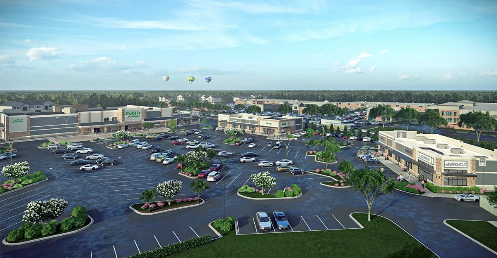

West Edge
Architect - Hiscutt & Associates
Developer - Adams Property Group
Role - Project Manager / Project Designer
A retail development in Winston Salem, NC currently under construction. The project consists of 38,000 sf of shell work on the primary anchor space, plus 20,000 sf of additional retail space split across three outparcels. I was responsible for leading schematic design and design development through construction documentation and permitting as the project manager, including client relations, consultant coordination, and final drawing preparation.

Building 1 - Anchor store facade design

Building 2 - Attached retail, shell and warm dark interior fitout

Building 3 - Detached retail, shell and warm dark interior fitout

Building 3 - Detached retail, shell and warm dark interior fitout